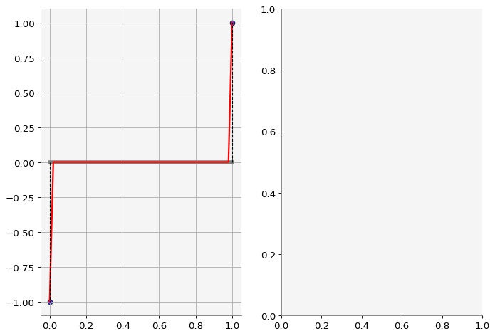
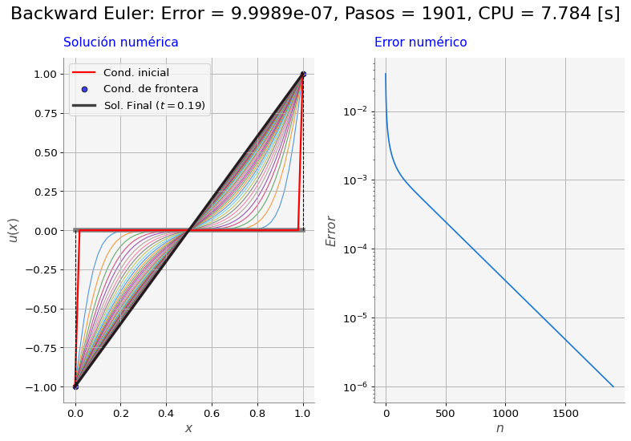

import numpy as np
import time
import matplotlib.pyplot as plt
import macti.visual as mvis
from macti.evaluation import *
def plot_initial_status(ax, x, u):
ax.plot(x,[0 for i in x], '-', c='gray', lw=5)#, label='Malla')
ax.plot(x,u,'r-',lw=2, label='Cond. inicial')
ax.plot([0,0],[0,-1], 'k--', lw=1.0)
ax.plot([1,1],[0,1], 'k--', lw=1.0)
ax.scatter([0,1],[u[0], u[-1]], fc='blue', ec='k', alpha=0.75, label='Cond. de frontera')
ax.grid()
def buildMatrix(N, r):
# Matriz de ceros
A = np.zeros((N,N))
# Primer renglón
A[0,0] = 1 + 2 * r
A[0,1] = -r
# Renglones interiores
for i in range(1,N-1):
A[i,i] = 1 + 2 * r
A[i,i+1] = -r
A[i,i-1] = -r
# Último renglón
A[N-1,N-2] = -r
A[N-1,N-1] = 1 + 2 * r
return A7 Método de Euler hacia atrás.
Objetivo.
Resolver la ecuación de calor no estacionaria y sin fuentes en 1D usando el Método de Euler hacia atrás (implícito).
MACTI-Analisis_Numerico_01 by Luis M. de la Cruz is licensed under Attribution-ShareAlike 4.0 International


Trabajo realizado con el apoyo del Programa UNAM-DGAPA-PAPIME PE101922
quizz = Quizz('08', 'notebooks', 'local')7.1 Ejercicio 1.
Definir:
- Coordenadas de la malla: \(x\)
- Arreglo para la solución final: \(u\)
- Valores de \(u\) en la frontera.
# Parámetros físicos
L = 1.0 # Longitud del dominio
bA = -1 # Dirichlet en A
bB = 1 # Dirichlet en B
alpha = 1 # Parámetro físico
# Parámetros numéricos
N = 49 # Número de incógnitas
h = L / (N+1) # Tamaño de la malla
ht = 0.0001 # Paso del tiempo
Tmax = 1.0 # Tiempo total de simulación
Nt = int(Tmax / ht) # Número total de pasos
r = ht * alpha / h**2
tolerancia = 1e-6 # Criterio de termino anticipado
# Variables para medir el rendimiento
suma_tiempos = 0.0 # Tiempo total
error = [] # Errores
print(" h = {}, ht = {}, Tmax = {}, Nt = {}, r = {}".format(h, ht, Tmax, Nt, r))
# Preparación de arreglos (malla, solución)
# x = ...
# u = ...
# Condiciones de frontera
# u[0] = ...
# u[N+1] = ...
### BEGIN SOLUTION
# Preparación de arreglos (malla, solución)
x = np.linspace(0,L,N+2) # Coordenadas de la malla
u = np.zeros(N+2) # Arreglo para la solución
# Condiciones de frontera
u[0] = bA
u[N+1] = bB
file_answer = FileAnswer()
file_answer.write('1', x, 'Las coordenadas de la malla están incorrectas.')
file_answer.write('2', u, 'El arreglo para la solución no está bien definido.')
### END SOLUTION h = 0.02, ht = 0.0001, Tmax = 1.0, Nt = 10000, r = 0.25
El directorio :/home/jovyan/macti/notebooks/.ans/Metodo_de_Euler/ ya existe
Respuestas y retroalimentación almacenadas.quizz.eval_numeric('1',x)----------------------------------------
1 | Tu resultado es correcto.
----------------------------------------quizz.eval_numeric('2',u)----------------------------------------
2 | Tu resultado es correcto.
----------------------------------------# Visualización de las condiciones iniciales y de frontera
fig, (ax1, ax2) = plt.subplots(1, 2, figsize=(10,7))
plot_initial_status(ax1, x, u)
plt.show()
7.2 Ejercicio 2.
Completar el código con el algoritmos de Euler hacia adelante.
# Visualización de las condiciones iniciales y de frontera
fig, (ax1, ax2) = plt.subplots(1, 2, figsize=(10,7))
plot_initial_status(ax1, x, u)
# Lado derecho del sistema, contiene la condicion inicial u
f = np.copy(u[1:N+1])
# Copia de la solución para mantener el resultado en el paso previo.
uold = np.copy(u)
# Construcción de la matriz
A = buildMatrix(N,r)
# Ciclo en el tiempo, desde 1 hasta Nt-1
for n in range(1, Nt):
### BEGIN SOLUTION
t1 = time.perf_counter()
f[0] += r * bA
f[N-1] += r * bB
u[1:N+1] = np.linalg.solve(A,f) # Sol. del sistema lineal
t2 = time.perf_counter()
suma_tiempos += (t2 - t1)
e = np.sqrt(h) * np.linalg.norm(uold-u)
error.append(e)
### END SOLUTION
# Graficación cada 25 pasos
if n % 25 == 0:
ax1.plot(x,u,'-', lw = 1.0, alpha = 0.75, zorder=1)
# Actualizacion de la solucion para dar el siguiente paso
t1 = time.perf_counter()
f = np.copy(u[1:N+1])
uold = np.copy(u)
t2 = time.perf_counter()
suma_tiempos += (t2 - t1)
# Terminación anticipada si se cumple la tolerancia
if e < tolerancia:
break
file_answer.write('3', error[-1], 'El error no está correctamente calculado.')
file_answer.write('4', n, 'El número de pasos no es el correcto, checa tu algoritmo.')
# Gráficación de resultados
titulo = 'Backward Euler: Error = {:5.4e}, Pasos = {:4d}, CPU = {:5.4} [s]'.format(e, n, suma_tiempos)
fig.suptitle(titulo, fontsize=20)
ax1.plot(x,u,'-k',lw=3,alpha=0.75,label='Sol. Final ($t=${:3.2f})'.format(n*ht))
ax1.set_xlabel('$x$')
ax1.set_ylabel('$u(x)$')
ax1.set_title('Solución numérica', color='blue')
ax1.legend()
ax2.plot(error)
ax2.set_yscale('log')
ax2.set_xlabel('$n$')
ax2.set_ylabel('$Error$')
ax2.set_title('Error numérico', color='blue')
ax2.grid()
plt.tight_layout()
plt.show()El directorio :/home/jovyan/macti/notebooks/.ans/Metodo_de_Euler/ ya existe
Respuestas y retroalimentación almacenadas.
quizz.eval_numeric('3',error[-1])----------------------------------------
3 | Tu resultado es correcto.
----------------------------------------quizz.eval_numeric('4',n)----------------------------------------
4 | Tu resultado es correcto.
----------------------------------------